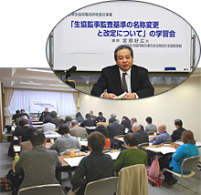

埼玉県生協役職員研修委託事業
生協監事監査基準の名称変更と改定についての学習会 報告
- 【日 時】
- 12月11日(火)10:30～12:05
- 【場 所】
- さいたま共済会館505会議室
- 【参加者】
- 34人(さいたまコープ4、パルシステム埼玉7、生活クラブ2、勤労者生協4、医療生協さいたま9、さいたま住宅生協1、さいたま高齢協1、埼玉県民共済生協2、埼玉県生協連4）
■概 要

講師：宮部 好広氏
(日本生協連法規会計支援室室長)
I．生協監事監査基準の名称変更と改定について(案)
1．経緯
前回の改定から4年が経過し、この間の監事監査の実践、監事監査を取り巻く環境の変化等を踏まえ、必要な改定を行いました。
2．改定の主旨
（1）今回の見直しは、現行監査監事基準の位置づけを基本的に維持しつつ、部分的な修正を図るというスタンスで行いました。誤解を招く記述の修正に加え、この間の実践の進展や監事監査の環境整備に関する到達点を踏まえて修正をしました。
（2）改定の主な内容は、｢生協監事監査基準モデル｣としたこと、｢生協のガバナンスと理事・監事の職責、監事の職務と監査環境整備の意義、監事会、監査報告の重要性の記述したこと、｢基準構成・文書編成｣を見直したこと、｢基準の新設と内容｣を追加したこと等になっています。
3．本モデルの位置づけと対象生協について
監事に期待されている役割と責務を明確にし、監事自身が職務を遂行するための拠り所になることを意図して作成しました。
4．生協監事監査基準モデル前文(案)の考え方
＜生協のガバナンスと理事・監事の職責＞
理事と監事はともに役員として生協と委任関係にあり、独立・対等の立場で生協のガバナンスの一翼を担う存在として制度上設計されています。理事・監事の職務が十分に果たされることが、生協における健全なガバナンスを実現する上で重要になります。
＜監事の職務と環境整備の意義＞
監事は、職務につき善管注意を尽くして遂行しなければならず、十分に職務を遂行しているか否かについて法的責任を問われ得る立場にあり、監事監査の環境整備が不可欠です。
＜監事会＞
監事は独人制の機関ですが、広範にわたる理事の職務の執行状況を監視し検証するという職務を適切に果たしていく上では、監事全員により構成される任意の機関として監事会を設置することが適切です。
＜監査報告＞
監事は、事業年度の監査が終了し、事業報告書・決算関係書類やそれらの附属明細書を受領した場合は、検討の上、監査報告を作成しなければなりません。その監査報告には、実際に実施した監査の方法及びその内容と監査結果の記載が必要とされます。
II．監事監査実態調査をふまえた監査報告書の改善のお願いと検討事項を説明。
III．｢生協監事監査基準モデル｣見直しについて新旧比較表(案)のポイントを説明。